從診斷到治療 III：常見膝關節手術選擇與規劃
From Diagnosis to Treatment III: Common Knee Surgery Options and Planning｜講者：呂明 獸醫師（美國加州大學戴維斯分校助理教授；專長小動物外科、關節置換、關節手術）
2026 年 11 月 5 日｜聯盟獸醫教育中心 卓越講堂｜主持人：戴子綺 院長
資料來源標記：
📸 現場 課堂投影片截圖
💡 補充 整理者補充（教科書知識，非講者內容）
✍️ 筆記 現場筆記
線上課程進行中，依截圖逐步更新；目前 15 張投影片。💡 部分是整理者依教科書補的解釋，之後會依講者內容或錄音更正。
線上課程進行中，依截圖逐步更新；目前 15 張投影片。💡 部分是整理者依教科書補的解釋，之後會依講者內容或錄音更正。
⭐ 目前重點
- 膝關節問題分兩個關節看：股脛關節（CrCL）與股髕關節（髕骨脫位），另有 OCD、髕骨損傷（髕韌帶斷裂）、其他不穩定（CdCL、側副韌帶）
- CrCL 斷裂與髕骨脫位都非常常見，而且常同時存在
- 步態：跛行程度不一，受肢體排列、疼痛、慢性程度影響；慢性病例可以是機械性跛行（不痛但走路異常）
- 站立檢查兩側比較：關節積液、內側增厚（medial buttress）、肌肉萎縮、髕骨脫位
- 側躺檢查：前／後抽屜、脛骨推力、外展與內收、髕骨脫位
- CrCL 部分斷裂：表現較不明顯、間歇性跛行，抽屜只在屈曲時出現，因為尾外側束只在伸直時拉緊
- 保守治療只適合：偏瘦（BCS 4/9）＋ <15 kg ＋活動需求低＋飼主配合度高；就算全部做到，對側肢體可能負擔過重
- 保守治療用藥：carprofen 2.2 mg/kg BID；鎮靜 trazodone 5–7 mg/kg TID ± gabapentin 10–15 mg/kg TID ± acepromazine 0.5–2 mg/kg BID–QID
- 不適合保守：肥胖、年輕好動難限制、大型犬、雙側、嚴重不穩定、合併半月板撕裂
- TPLO vs TTA：Slocum 模型（關節反作用力沿脛骨軸 → 把平台角整平）vs Tepic 模型（反作用力平行髕韌帶 → 前移粗隆讓髕韌帶垂直平台）
- 系統性回顧：兩者都成功；TPLO 感染率可能較低、TTA 6 個月內 OA 分數較好；講者在意的是 TTA 植入物取出很麻煩
- Jeong 2021 活體實驗：跛行無差異，但 TTA 後 4/5 膝發生外側半月板撕裂、內側半月板病變與軟骨損傷都較多 → TTA 後殘存不穩定較多？
- 關節外側縫線（腓腸豆－脛骨縫線，MSU Dr. Flo）：繞腓腸豆或骨錨＋脛骨骨隧道；是縫線斷掉 vs 疤痕組織夠強的賽跑，太早斷就要重做
- 術後穩定度：截骨術（TPLO/TTA）仍有抽屜但脛骨推力應消失；外側縫線則無抽屜、無推力、活動範圍受限
- 術後活動：截骨術可每天走 3–4 次、每次約 10 分鐘再逐步增加；外側縫線要非常嚴格休息，避免縫線拉長或斷裂
- 髕骨脫位：分級、臨床症狀、跛行是因為疼痛還是生物力學？—「機械性跛行」
場次資訊
▾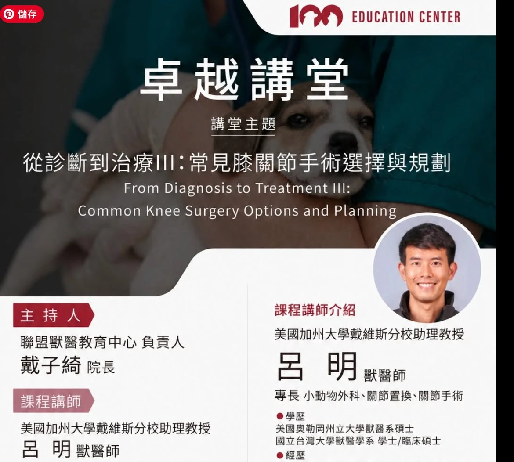
- 主題：從診斷到治療 III：常見膝關節手術選擇與規劃（From Diagnosis to Treatment III: Common Knee Surgery Options and Planning）。
- 講者：呂明 獸醫師，美國加州大學戴維斯分校（UC Davis）助理教授；專長小動物外科、關節置換、關節手術。學歷：美國奧勒岡州立大學獸醫系碩士、國立台灣大學獸醫學系學士／臨床碩士。
- 主持人：聯盟獸醫教育中心負責人 戴子綺 院長。
- 形式：線上講座（2026-11-05）。
1. 膝關節疾病總覽
▾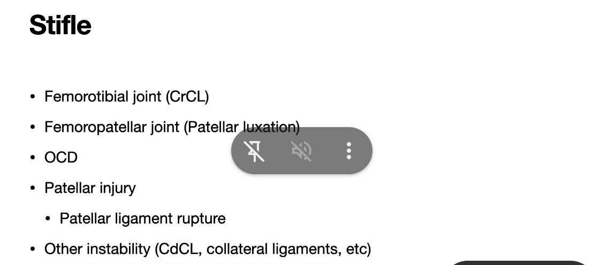
| 📸 投影片 | 中文 | 💡 補充 |
|---|---|---|
| Femorotibial joint (CrCL) | 股脛關節：前十字韌帶 | 犬最常見的後肢跛行原因；多為慢性退化性斷裂，常見雙側（另一側之後也斷的比例高）。 |
| Femoropatellar joint (Patellar luxation) | 股髕關節：髕骨脫位 | 小型犬多為內側脫位（MPL），大型犬也可見外側脫位；常合併 CrCL 斷裂。 |
| OCD | 剝離性骨軟骨炎 | 膝關節 OCD 好發於股骨外髁內側面，年輕大型犬，常雙側。 |
| Patellar injury — Patellar ligament rupture | 髕骨損傷：髕韌帶斷裂 | 多為外傷，或 TPLO 等手術後的髕韌帶炎／斷裂。 |
| Other instability (CdCL, collateral ligaments, etc) | 其他不穩定：後十字韌帶、側副韌帶等 | 單獨的 CdCL 斷裂少見，多為外傷造成的多韌帶損傷（膝關節脫臼）。 |
2. 理學與骨科檢查：CrCL 與髕骨脫位
▾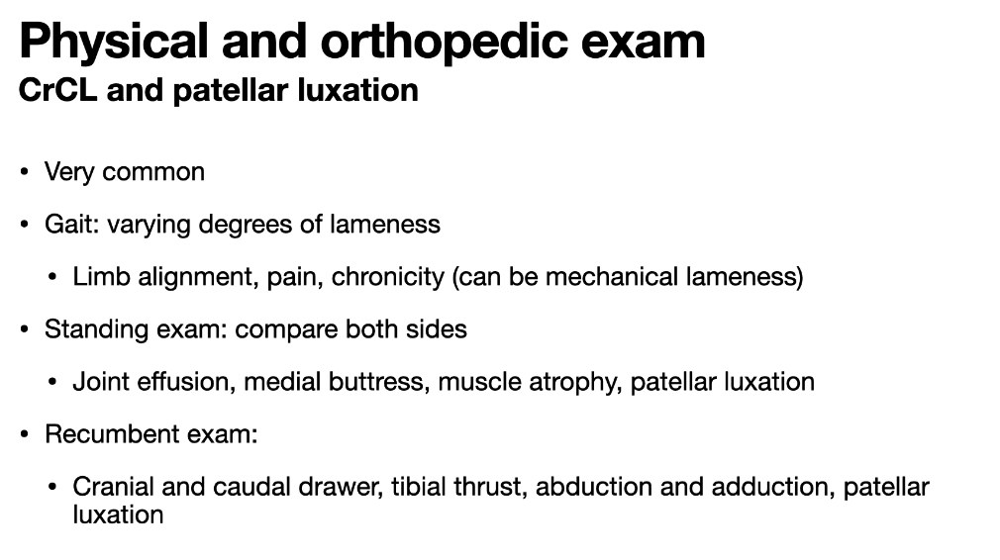
| 檢查階段 | 📸 投影片要點 |
|---|---|
| 整體 | CrCL 斷裂與髕骨脫位都非常常見。 |
| 步態 | 跛行程度不一，受肢體排列、疼痛、慢性程度影響；可以是機械性跛行。 |
| 站立檢查 | 兩側比較：關節積液、內側增厚（medial buttress）、肌肉萎縮、髕骨脫位。 |
| 側躺檢查 | 前抽屜與後抽屜、脛骨推力、外展與內收、髕骨脫位。 |
各項檢查怎麼做 💡
- 機械性跛行：慢性病例關節纖維化、內側增厚後，疼痛可能不明顯，但活動範圍受限、步態仍異常；典型例子是長期髕骨脫位造成的跳步（skipping）或膝關節無法完全伸直。
- 關節積液：站立時摸髕韌帶兩側，正常可清楚摸到髕韌帶邊緣；積液時邊緣變鈍、韌帶摸起來不清楚。
- 內側增厚（medial buttress）：慢性 CrCL 斷裂後，膝關節內側關節囊纖維化與骨贅形成，在脛骨近端內側摸到硬的隆起；兩側比較最明顯。
- 肌肉萎縮：大腿肌群（股四頭肌、腿後肌群）兩側比較，代表慢性、不願負重。
- 前抽屜試驗（cranial drawer）：一手拇指放在腓骨頭後方、食指放在脛骨粗隆，另一手拇指放在股骨外髁後方、食指放在髕骨；固定股骨，把脛骨往前推。脛骨相對股骨往前移動＝陽性。年輕動物正常會有少量移動但有明確停止點（puppy drawer）。
- 後抽屜：同樣手勢把脛骨往後推，檢查後十字韌帶（CdCL）。
- 脛骨推力試驗（tibial thrust / tibial compression test）：一手固定股骨遠端、食指放在脛骨粗隆，另一手將跗關節屈曲；腓腸肌拉緊時脛骨被推向前方，食指感覺到脛骨粗隆往前移＝陽性。比抽屜試驗不需要那麼放鬆，清醒動物也較容易做。
- 外展與內收：膝關節伸直時對脛骨施加內外翻力量，檢查內側與外側側副韌帶。
- 髕骨脫位：伸直膝關節並將腳掌內旋，用拇指把髕骨往內推（內側脫位）；外旋並往外推（外側脫位）。依可否自行復位、是否持續脫位分 I–IV 級。
3. CrCL 部分斷裂
▾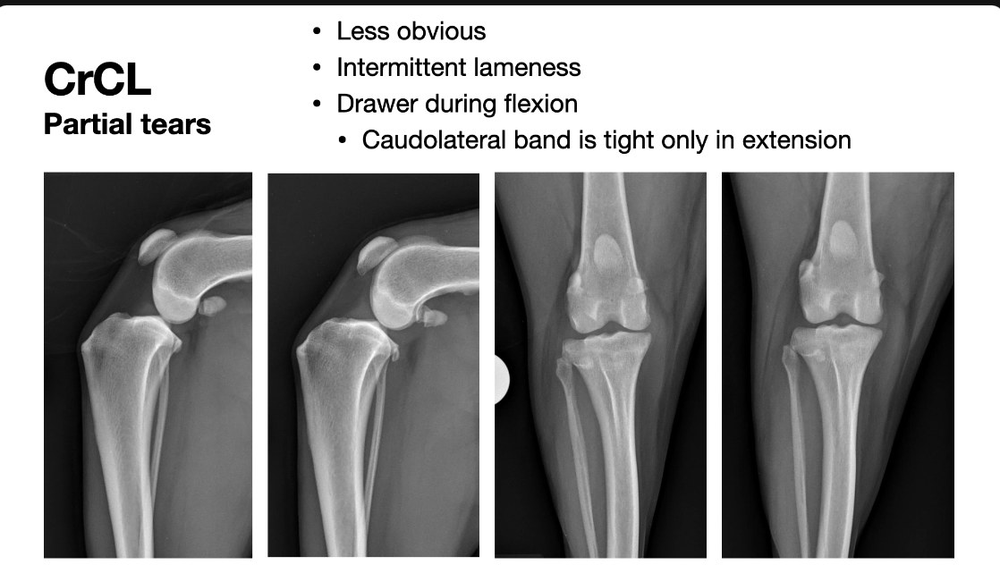
- 📸 部分斷裂比較不明顯，常是間歇性跛行。
- 📸 抽屜只在屈曲時出現：因為尾外側束（caudolateral band）只在伸直時拉緊。
兩條纖維束與屈曲時抽屜 💡
| 纖維束 | 伸直 | 屈曲 | 部分斷裂時 |
|---|---|---|---|
| 頭內側束（craniomedial band） | 拉緊 | 拉緊 | 部分斷裂最常斷的是這一束 |
| 尾外側束（caudolateral band） | 拉緊 | 放鬆 | 還完整 |
- 頭內側束斷了、尾外側束還在：伸直時尾外側束仍拉緊、擋住脛骨前移 → 伸直做抽屜是陰性；屈曲時尾外側束放鬆 → 才摸得到前抽屜。
- 所以懷疑部分斷裂時，抽屜試驗要在伸直、站立角度與屈曲三種角度都做，只在伸直做會漏掉。
- 部分斷裂多數會進展成完全斷裂，這也是很多外科醫師對部分斷裂也建議手術（如 TPLO）的理由；術前可配合關節鏡評估殘存韌帶。
X 光
- 📸 投影片下方是兩張膝關節側位片與兩張前後位片。
- 💡 CrCL 疾病在 X 光上看的是間接徵象：髕下脂肪墊被積液推擠變小（effusion sign）、關節周圍骨贅、脛骨相對股骨前移（不一定看得到）；X 光無法直接看到韌帶，部分斷裂時可能只有輕微積液。講者對這幾張片子的說明待補。
4. 內科保守治療還有角色嗎？
▾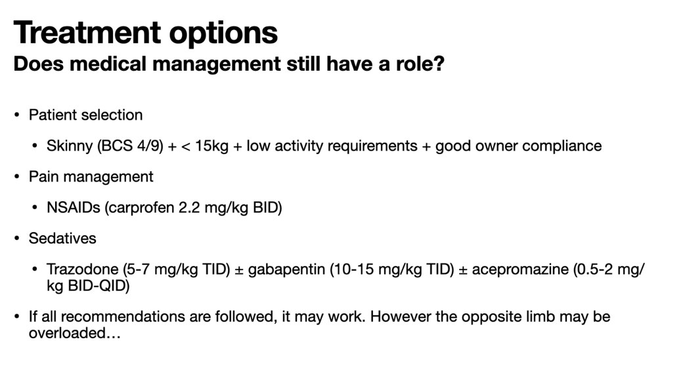
| 項目 | 📸 投影片 |
|---|---|
| 病患選擇 | 偏瘦（BCS 4/9）＋體重 <15 kg＋活動需求低＋飼主配合度高，四個條件要同時成立 |
| 止痛 | NSAID：carprofen 2.2 mg/kg BID |
| 鎮靜（限制活動） | trazodone 5–7 mg/kg TID ± gabapentin 10–15 mg/kg TID ± acepromazine 0.5–2 mg/kg BID–QID |
| 結論 | 所有建議都照做的話可能有效，但對側肢體可能負擔過重⋯ |
- 💡 對側負擔的意義：單側 CrCL 斷裂的犬，之後對側也斷的比例很高（文獻常見約 30–60%），保守治療期間長期偏重對側，可能加速對側發病。
- 💡 鎮靜藥的劑量是口服用；acepromazine 口服劑量明顯高於針劑，起始時從低劑量開始再調整。
不適合保守治療的情況
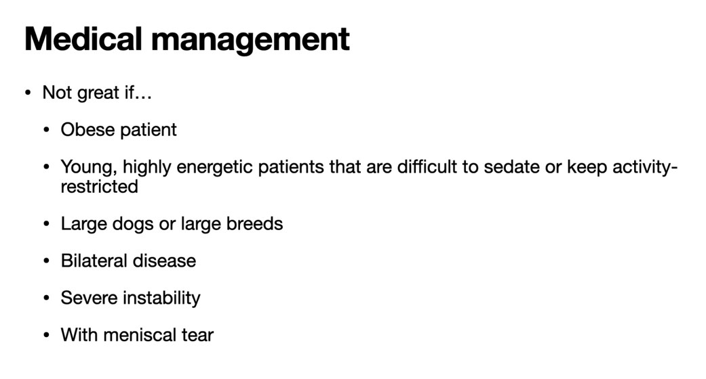
- 📸 以下情況保守治療效果不好：
- 肥胖
- 年輕、精力旺盛、很難鎮靜或限制活動的病患
- 大型犬或大型品種
- 雙側疾病
- 嚴重不穩定
- 合併半月板撕裂
5. 手術：TPLO 還是 TTA？
▾Slocum 模型 vs Tepic 模型
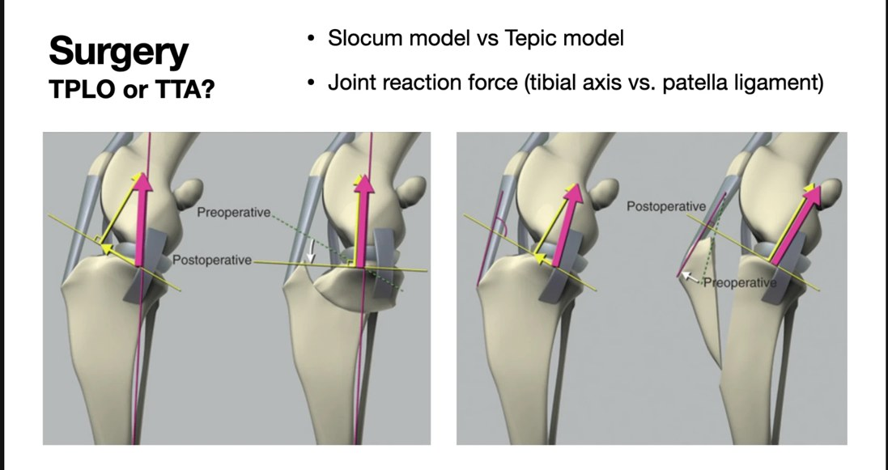
- 📸 兩種術式的差別在於對關節反作用力方向的假設：沿脛骨軸（Slocum）或沿髕韌帶（Tepic）。
| TPLO（Slocum 模型） | TTA（Tepic 模型） | |
|---|---|---|
| 💡 關節反作用力方向 | 大致平行脛骨長軸 | 大致平行髕韌帶 |
| 💡 前推力怎麼來 | 脛骨平台往後下傾斜，軸向力在斜面上分出往前的分力（脛骨前推） | 髕韌帶與平台不垂直時，合力有往前的分量 |
| 💡 手術目標 | 弧形截骨把平台旋轉到與脛骨軸接近垂直（TPA 約 5°） | 把脛骨粗隆往前移，讓髕韌帶在站立角度垂直於平台 |
| 💡 圖上看 | 左圖：平台從 Preoperative 虛線轉到 Postoperative | 右圖：髕韌帶從 Preoperative 移到 Postoperative，粗隆前移處有楔形空隙 |
兩種術式都是讓 CrCL 不再需要承擔前推力（動態穩定），而不是重建韌帶。
系統性回顧：TPLO vs TTA
![Surgical options - TPLO vs TTA：Wemmers AC, Charalambous M, Harms O, Volk HA. Surgical treatment of cranial cruciate ligament disease in dogs using Tibial Plateau Leveling Osteotomy or Tibial Tuberosity Advancement—A systematic review with a meta-analytic approach（Hannover）。Almost half of the studies were considered to provide low quality evidence；Both were considered successful options；TPLO may have had a lower SSI rate, while TTA had better OA scores up to 6 months；It matters to me, because TTA implant removal is NOT fun…；右側為 TTA 植入物與取出後的側位 X 光](photos/01-tplo-vs-tta-review-live.jpg)
- 📸 文獻：Wemmers、Charalambous、Harms、Volk（德國 Hannover 獸醫大學）對 TPLO 與 TTA 的系統性回顧與統合分析。
- 📸 將近一半的研究證據品質低。
- 📸 兩種術式都被認為是成功的選擇。
- 📸 TPLO 手術部位感染（SSI）率可能較低，TTA 在術後 6 個月內的 OA 分數較好。
- 📸 講者：感染率對他很重要，因為TTA 植入物取出一點都不好玩（右側 X 光：TTA 植入物，以及取出後的脛骨）。
活體實驗：TTA 與 TPLO 術後的半月板撕裂
![Surgical options - TPLO vs TTA：Jeong J, Jeong SM, Kim SE, Lewis DD, Lee H. Subsequent meniscal tears following tibial tuberosity advancement and tibial plateau leveling osteotomy in dogs with cranial cruciate ligament deficiency: An in vivo experimental study. Vet Surg 2021 (doi 10.1111/vsu.13648)。Experimental in vivo study；No difference in lameness scores at any time point；Radiographic OA scores of TTA > TPLO at 12 weeks post op, no difference at 32 weeks post op；Subsequent lateral meniscal tears occurred in 4/5 TTA stifles；Medial meniscal pathology scores were higher in TTA stifles than in TPLO stifles；TTA stifles had more articular cartilage damage（Does this mean there is more residual instability after TTA?）](photos/01-tplo-vs-tta-meniscal-live.jpg)
- 📸 文獻：Jeong J、Jeong SM、Kim SE、Lewis DD、Lee H，Vet Surg 2021（doi:10.1111/vsu.13648），活體實驗研究。
- 📸 跛行分數在任何時間點都沒有差異。
- 📸 X 光 OA 分數：術後 12 週 TTA > TPLO，32 週時沒有差異。
- 📸 TTA 組 5 個膝有 4 個之後發生外側半月板撕裂。
- 📸 內側半月板病變分數 TTA 高於 TPLO；TTA 組關節軟骨損傷也較多。
- 📸 講者提問：這是否代表 TTA 術後的「殘存不穩定」較多？
- 💡 注意這篇與上一篇系統性回顧的 OA 結果方向相反（回顧是 TTA 6 個月內 OA 分數較好）；實驗研究樣本數很小，但能直接看關節內部。
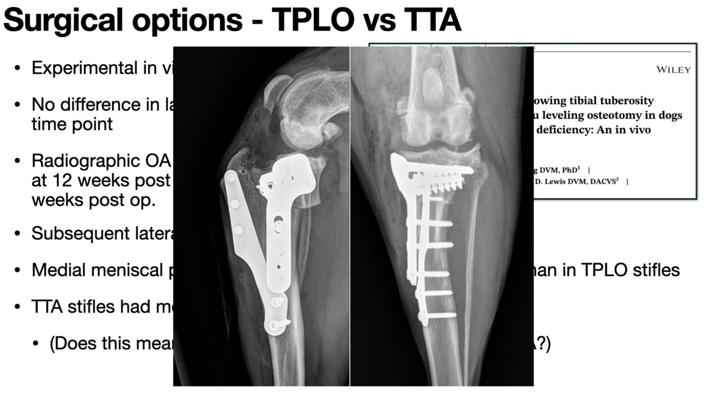
6. 關節外側縫線（Lateral suture）
▾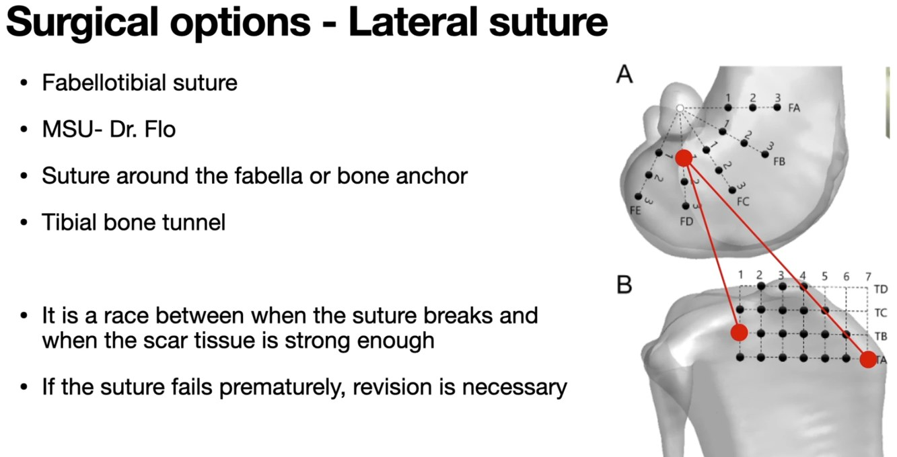
- 📸 腓腸豆－脛骨縫線（fabellotibial suture），由 MSU（密西根州立大學）Dr. Flo 推廣。
- 📸 縫線繞過外側腓腸豆或固定在骨錨上，另一端穿過脛骨骨隧道。
- 📸 這是一場縫線斷掉 vs 疤痕組織長到夠強的賽跑。
- 📸 縫線太早失效就必須重做。
- 💡 右圖是股骨端（FA–FE 放射狀格點）與脛骨端（TA–TD × 1–7 格點）附著點組合的示意，用來找最接近等長的位置：附著點越接近等長，膝關節屈伸時縫線張力變化越小，越不容易鬆掉或斷掉。
- 💡 關節外縫線是被動穩定，不處理脛骨平台角；一般認為較適合小型、體重輕的犬貓。
7. 術後照護
▾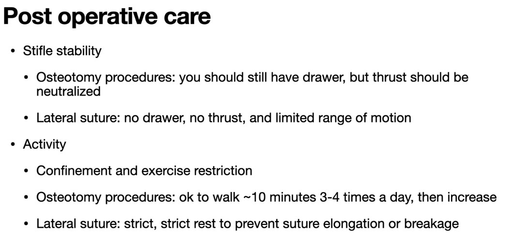
| 📸 截骨術（TPLO／TTA） | 📸 關節外側縫線 | |
|---|---|---|
| 術後膝關節穩定度 | 仍摸得到抽屜，但脛骨推力應該被中和 | 沒有抽屜、沒有推力，活動範圍受限 |
| 活動 | 籠內休養與限制運動；可以每天 3–4 次、每次約 10 分鐘牽繩散步，之後逐步增加 | 籠內休養與限制運動；非常非常嚴格的休息，避免縫線拉長或斷裂 |
- 💡 為什麼截骨術後還有抽屜：TPLO／TTA 沒有重建十字韌帶，只是改變幾何讓負重時不產生脛骨前推力（動態穩定），所以被動推脛骨仍會往前移；術後檢查看的是脛骨推力試驗是否陰性。外側縫線是直接把脛骨綁住（被動穩定），所以抽屜也會消失。
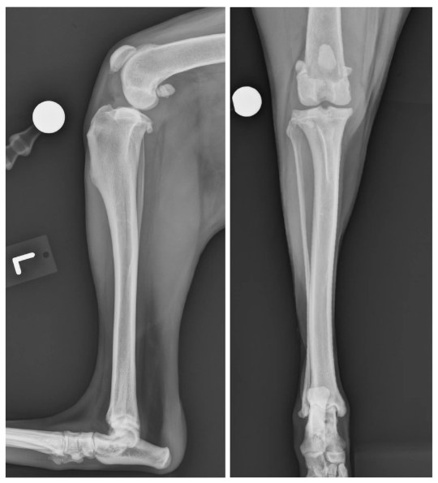
8. 髕骨脫位（Patellar luxation）
▾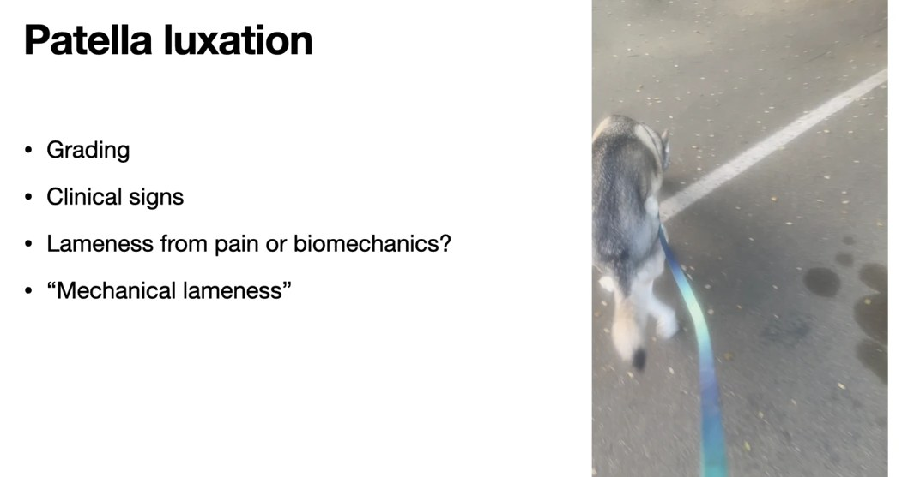
- 📸 討論重點：分級、臨床症狀、跛行是來自疼痛還是生物力學？—「機械性跛行」。
| 💡 分級 | 髕骨位置 | 常見表現 |
|---|---|---|
| I | 平常在滑車溝內；用手可推出，放手自己回位 | 多無症狀，觸診時偶然發現 |
| II | 平常在溝內；屈膝或用手可脫出，伸膝與旋轉脛骨才回位 | 間歇性跳步（skipping），踢一下腳後又正常 |
| III | 平常持續脫位，用手可推回，但放手又脫出 | 持續跛行或蹲伏步態，可能有骨骼變形 |
| IV | 持續脫位，用手推不回 | 膝無法完全伸直、嚴重骨骼變形、蹲伏或「O 型腿」步態 |
- 💡 分級是看髕骨的位置，不等於症狀嚴重度：有的 II 級很痛、有的 IV 級幾乎不痛但走路異常。這就是講者問「疼痛還是生物力學」的意思——機械性跛行通常止痛藥沒效，要矯正的是排列。
股骨 3D 重建（UC Davis）
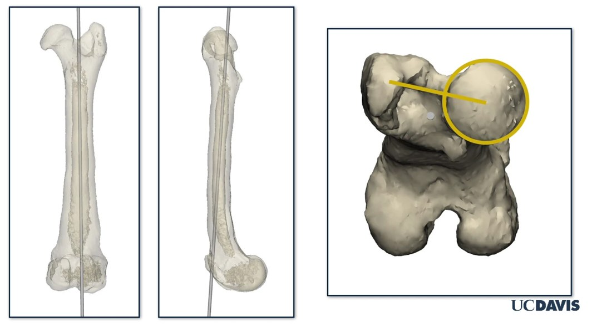
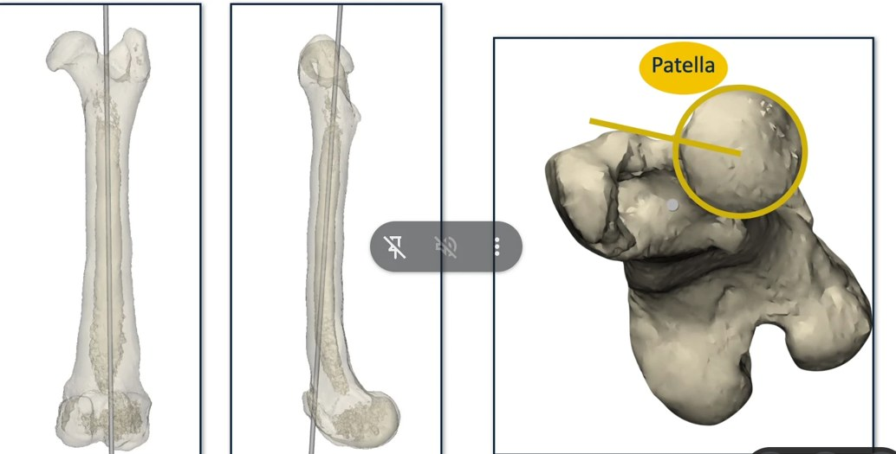
- 📸 用 CT 3D 重建看股骨長軸（兩張長骨圖的灰色軸線）與遠端股骨，黃色圓圈標示髕骨相對滑車的位置。講者的說明待補。
- 📸 下一張是兩側後肢的 CT 3D 重建（股骨與脛骨／足部分色）：一側股骨與脛骨明顯彎曲、整條肢體排列偏斜，另一側也有弧度，用來呈現髕骨脫位病例的整肢骨骼變形。（圖檔待補）
- 💡 髕骨脫位常與股骨／脛骨的排列異常有關（股骨遠端內翻、扭轉、脛骨粗隆內移、滑車溝淺），CT 3D 重建可用來量這些角度、規劃矯正截骨。
9. 課堂內容（持續更新）
▾課程進行中：後續內容（如髕骨脫位手術、半月板處理、術前規劃），會依現場投影片截圖與錄音陸續加入。